Cycling Around Singapore
Around two months ago I was hanging out with Matan and Faith. They told me they were planning to cycle around Singapore on the 2nd of August and asked me if I wanted to join.
During my time in Singapore I've had a lot of suggestions like these. The previous ones were about walking across Singapore, though. I had one from a previous flatmate that I said I would join, and I obviously bailed at the last minute. Then there was an Israeli guy who used to live in Singapore, and before he left he wanted to walk across Singapore. I just declined that one.
But this one was interesting. First of all, I had of course gotten into cycling after my cycling trip in Japan. And it was an event I actually had to pay for! Albeit only $15, but still, I paid! Of course I'd go for something I paid for!
So I said that I would of course join, and we said that we were going to train properly and be so ready for the event! Which, of course, didn't happen. We went into the event with one training session that we'd done the week before, only 30 km. And half the time I was riding with too little air in my tires.
So today was the big day. I was actually quite excited for this event. 120 km! Across Singapore! I had never cycled around a whole country before!
Obviously, in classic Tom fashion, I couldn't really sleep properly the night before. I knew I had to wake up at 5:40 AM, so like a functioning adult I put my phone to the side at around 22:30 and went to bed. But I couldn't sleep! I kept tossing and turning. I think I was excited, but mostly I was scared I wouldn't wake up. I ended up falling asleep around 1 AM, for a grand total of four and a half hours of sleep!
I woke up at 5:40, and it was pitch black!
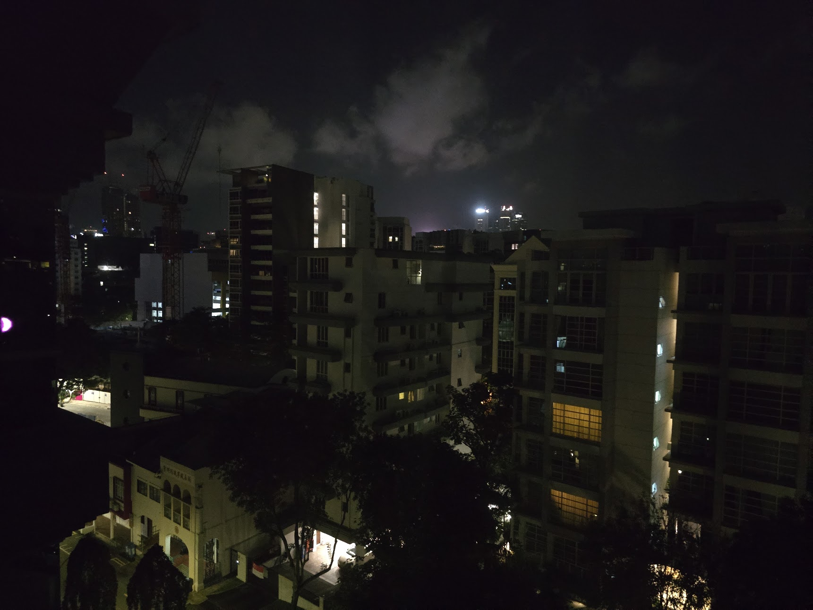
I had a quick breakfast, a coffee, and got to Kallang, where I met Matan and Faith at 7:30. We registered, put our bibs on our backs, and headed out to start the ride.
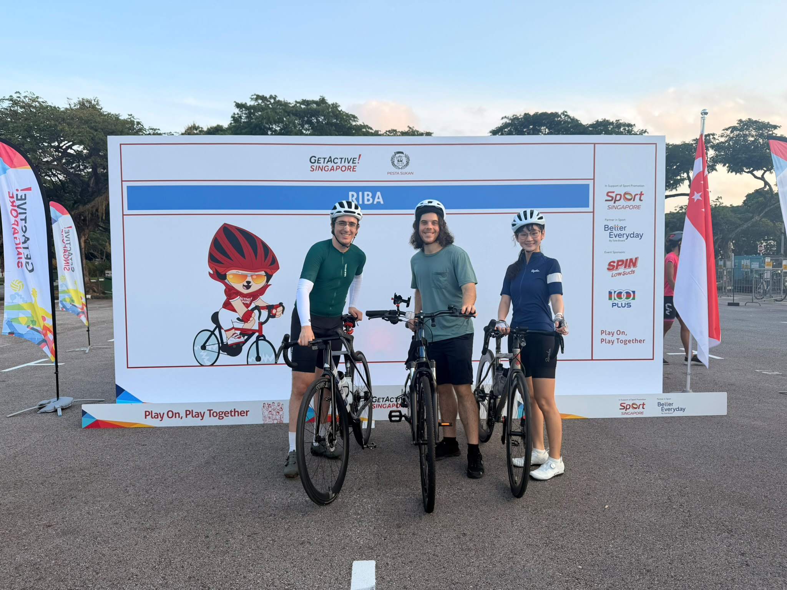
The first main part of the route was East Coast Park, which was a little bit of a breeze since we'd ridden it multiple times before. :)
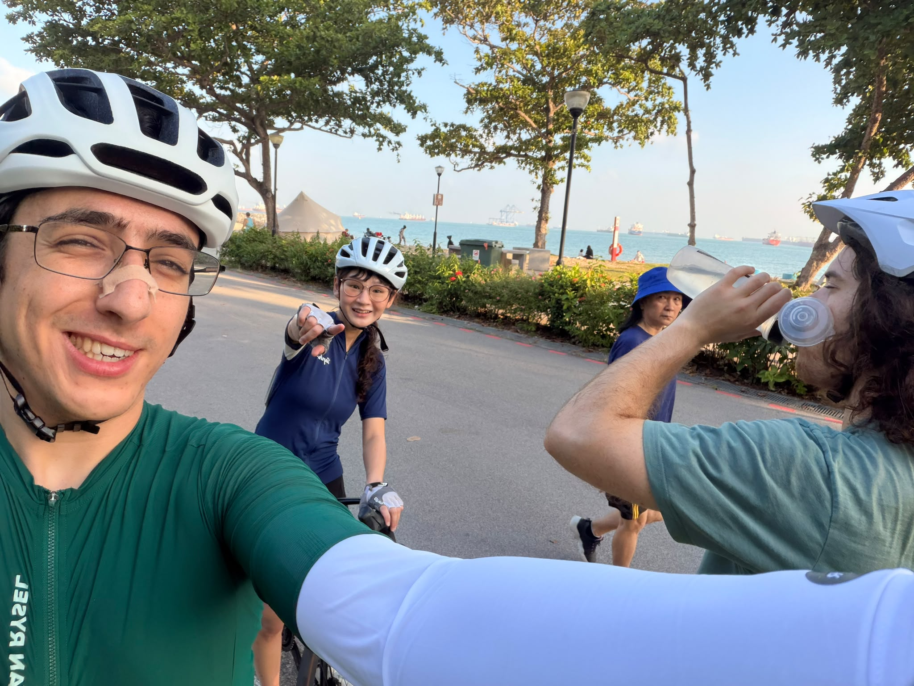
We made our way to Changi Village, where I think we made our biggest mistake. We decided to stop for a snack, and I was on a mission to get kaya toast. We went to an uncle and auntie stall, and it took forever! I get that it was a busy day, but in hindsight we should've skipped it. It was pretty good though, although there was a mix up and we had to go back and ask for the eggs as well, which added even more time.
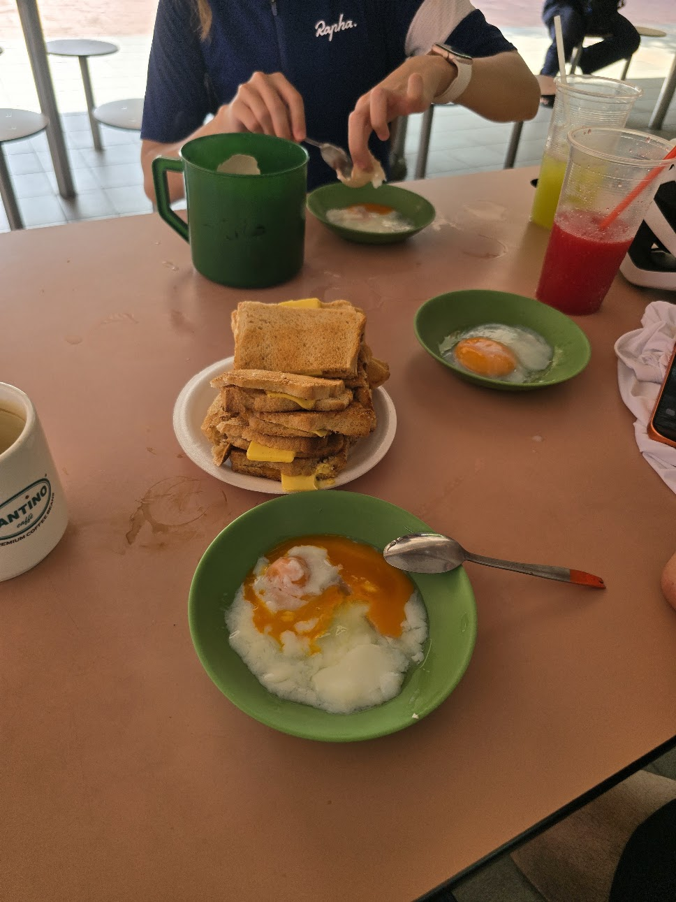
I think what made it so funny was that, literally 150 metres after the kaya toast stall, there was a refreshment stop. There were plenty of those along the route. They offered snacks such as kaya buns (which pretty much fulfilled the same purpose as kaya toast in this scenario), bananas, and 100 plus drinks. We could've just kept riding another 200 metres and gotten there! But oh well, it was a funny realization.
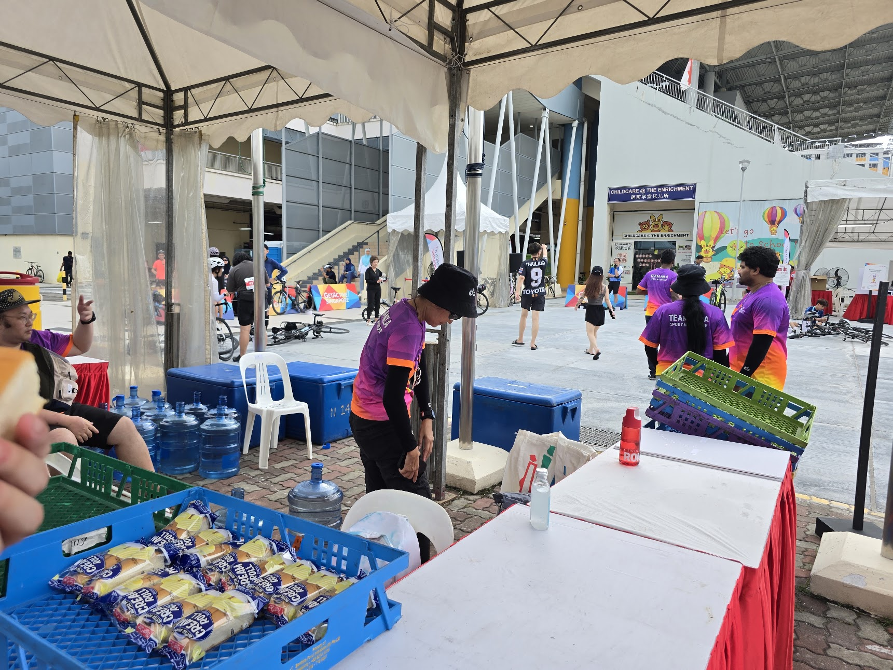
From there we kept riding until Punggol, where Faith left us since she'd only planned to do half the distance. Which I completely understand. There were some nice views along the way, and we stopped at a nice cafe to get some food.
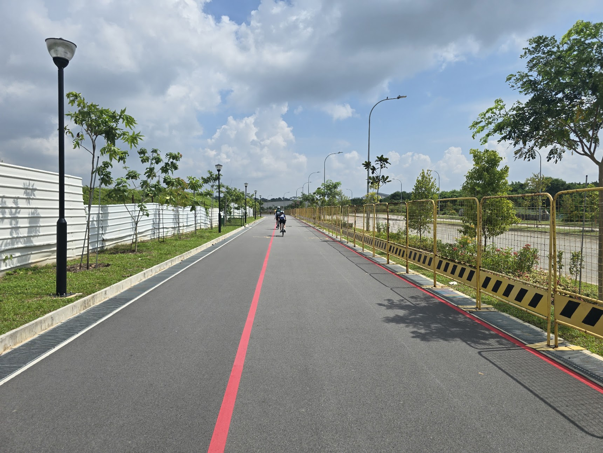
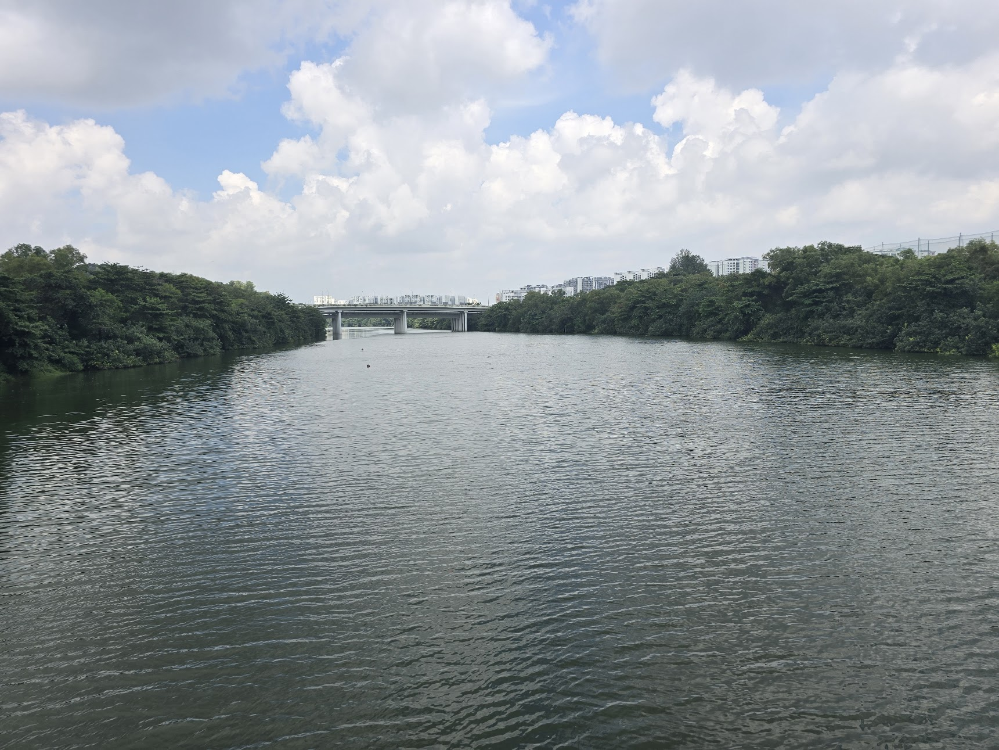
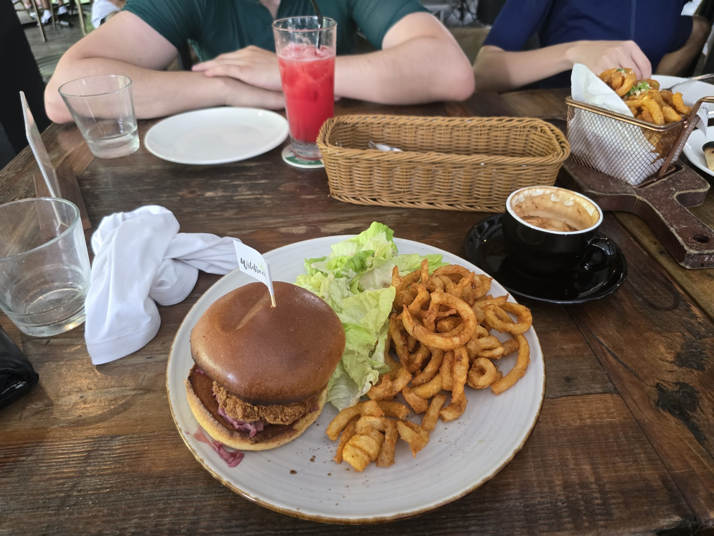
I think around lunch, and for a little while before it, was the worst part of the ride for me. I was struggling to keep up with the basic pace (18 km/h), and my quads were so sore! It felt like they were about to explode. I barely made it to the next refreshment stop, where I stretched my legs and had some more food, which really helped.
From there we made our way to the west side of Singapore, which, while super nice and quiet, was horrible! It felt endless, and there were so many hills. I kept telling Matan how it felt like I was back in Onomichi. Except the hills weren't as bad, so I didn't even have an excuse to get off my bike and push it. Horrible! But we made it through, barely.
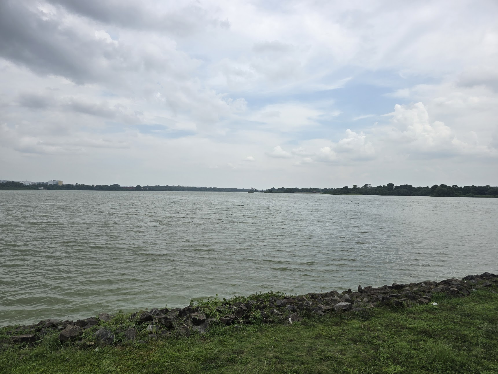
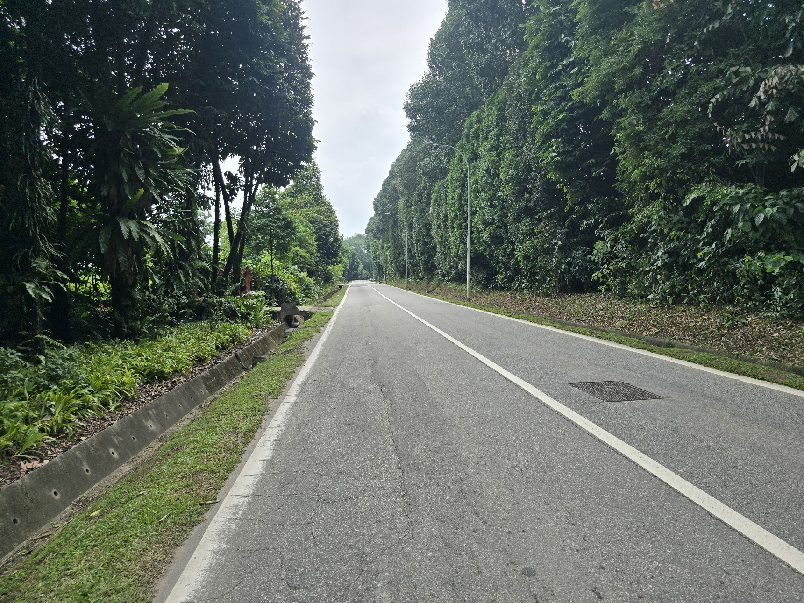
From there it was the final push, where we decided to have Mexican food at VivoCity. I, of course, managed to have the stupidest fall just 500 metres away from VivoCity. I was moving quite slowly but braked using only my front brake, and before I knew it I was on the floor. Nothing really happened except for a very small scratch. But wow, that irritated me. In hindsight, I was probably just hungry. I wasn't actually mad about the fall at all.
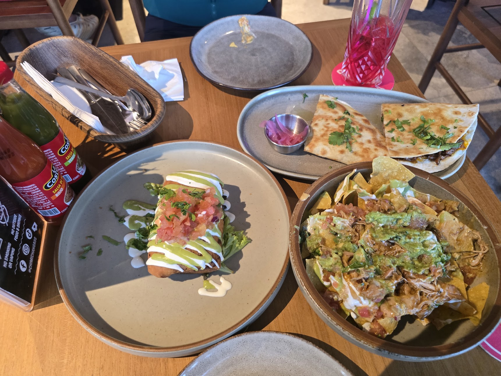
And that's it! After that we rode another 2 km together, where I said goodbye to Matan and headed home, which was another 4.5 km away. I got back, took the best shower of my life, and went straight to sleep.
I think after this, I ought to try the cross Singapore walk. But at least in September!
Here are the final Strava stats:
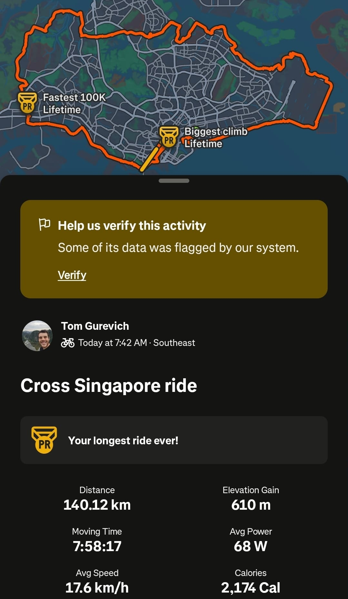
P.S.
I just want to mention how annoying the traffic lights here are! I swear it sometimes felt like we were standing there for 10 minutes at a time in the horrible Singapore heat! This was our view 90% of the time whenever we had a section through the city:
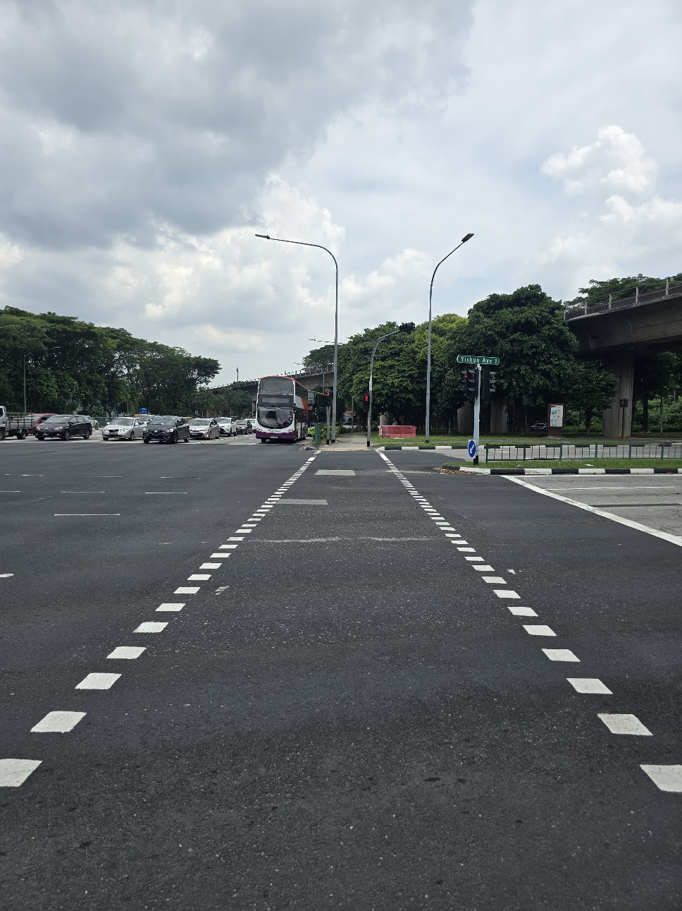
I swear this alone added an hour to our cycling time, just waiting at traffic lights. It drove us nuts! But oh well, I still had fun. :)